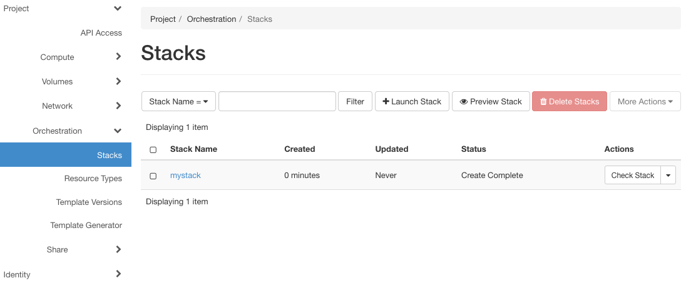
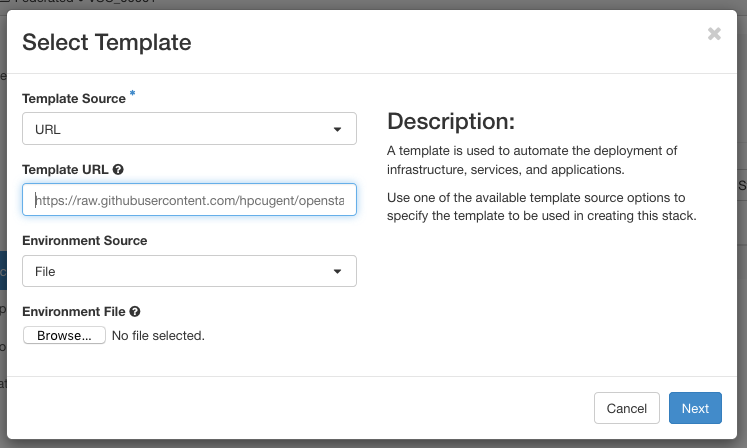
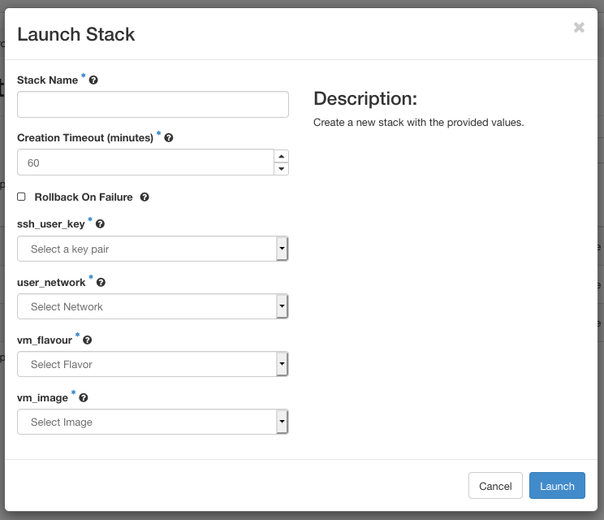

Orchestration Using Heat#
Heat is the name of the OpenStack orchestration engine, which can manage complete configurations of all servers, volumes, users, networks and routers that make up a cloud application. Instead of managing every component separately, we can create, start, stop or clean up our complete application in a single step. In OpenStack, such a collection of resources is called a stack.
Heat has its own dashboard interface, which you can find under the tab. Official documentation for Heat and its dashboard interface can be found at the following locations:
Heat Orchestration Template#
A stack's resources and their mutual dependencies can be specified in a text file, called a Heat Orchestration Template. The syntax of these templates conforms to the yaml standard, for which many text editors provide specialized editing modes. The Template Guide in the Heat documentation contains a specification of the HOT format, as well as information on how to describe the various types of resources in a template.
VSC provides some example templates at github.com/hpcugent/openstack-templates, which can serve as a starting point for your own templates, or as examples.
The following example describes a stack consisting of a single VM:
heat_template_version: 2018-08-31
description: >
This template instantiates a basic VM.
parameters:
user_key:
type: string
label: ssh_user_key
description: Public user ssh key to be injected in the cluster VMs
constraints:
- custom_constraint: nova.keypair
vm_flavour:
type: string
label: vm_flavour
description: Flavour for the VM
constraints:
- custom_constraint: nova.flavor
vm_image:
type: string
label: vm_image
description: Required VM image
constraints:
- custom_constraint: glance.image
user_network:
type: string
label: user_network
description: Add the required VM network
constraints:
- custom_constraint: neutron.network
resources:
my_server:
type: OS::Nova::Server
properties:
name: MyServer
metadata:
# Some metadata examples to be included in the VM
server: master
color: red
security_groups:
- default
networks:
- network: { get_param: user_network }
tag: master_ip
key_name: { get_param: user_key }
image: { get_param: vm_image }
flavor: { get_param: vm_flavour }
Our example contains four main sections:
heat_template_version
The HOT specification has evolved since its initial
release. The key heat_template_version indicates the version of
the syntax used in this template. It's value can be a release date
or (in recent version) the name of the version.
description
Providing a description is optional, but recommended.
parameters
Another optional section, parameters allow users to configure
various properties when instantiating a new stack, without having to
edit the template itself. A parameter value can be used elsewhere in
the template using the function get_param. In this example, we use
parameters to choose an SSH key, instance size ("flavor"), image,
and a network.
resources
This section contains all the resources used by the Stack. In this case, there is just a single VM instance (OS::Nova::Server).
Optional additional sections are paremeter_groups, outputs, and .
The Template Generator#
The Heat dashboard provides a graphical interface where users can draw templates by dragging resources onto a canvas, and connecting them. Users can then download a template generated from this interface, or immediately instantiate it as a stack.
Currently, there are a number of issues with the template generator, which require manual edits to the generated templates. Therefore, the template generator is currently not very useful. We will update this section as soon as these problems are solved.
Managing stacks#
The button in the tab takes you to the overview page where you can launch, suspend, resume and delete stacks.

The overview page contains a list of all currently existing stacks (either running or suspended), and buttons to perform the following actions:
Launch a stack#
- Click to open the following wizard:

-
Provide a template and --- optionally --- an environment for the stack.
- Template Source
You can provide a template using one of the following options:
-
File
Provide a local file on your system.
-
Direct Input
Enter the template in a text field.
-
URL
Provide a URL to have OpenStack download the template from that location.
In our example, we provide a URL from the repository https://github.com/hpcugent/openstack-templates, to instantiate the example from previous section. If you want to provide a template directly from GitHub, make sure to provide a "Raw" URL,
https://raw.githubusercontent.com/.... -
Environment Source
Optionally, you can also provide an environment file. This is another [yaml]{.smallcaps} file, which contains customizations for your Heat templates, such as default values for parameters, or custom resource types you have created (see 'Environments' in the Heat template guide). You can provide a File or choose Direct Input.
-
If you click Next, OpenStack will process the template. You can now enter a name for the stack, and provide values for all the template parameters:

- Click Launch to instantiate the stack.
Preview Stack#
starts a wizard similar to the "Launch Stack" wizard, but completing the wizard will only make the system perform a sanity check of your template, without instantiating the stack. If the check passes, you can inspect the parameters of the stack that would be created. The wizard does not allow you to enter input parameter values, so any mandatory input parameters should be provided in an environment.
Delete Stacks#
deletes all selected stacks from the list .
Deleting a stack also deletes all of the resources (volumes, ports) created by that stack, unless a different policy was set in the property for those resources (see the Resources section in the HOT specification).
More Actions#
The button More Actions hides the following additional actions:
Check Stacks verifies if the resources for selected stacks are still running.
Suspend Stacks suspends all resources of the selected stacks.
Resume Stacks resumes the selected (suspended) stacks.
You can quickly suspend, resume or delete a single stack using the drop-down menu in the Actions column of the overview. This menu also contains the option Change Stack Template, which allows you to update a Stack by providing a new template.